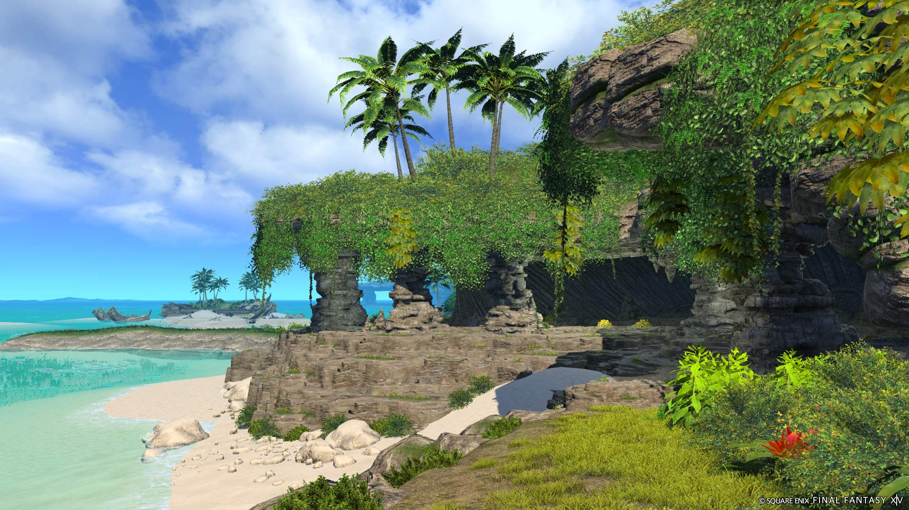
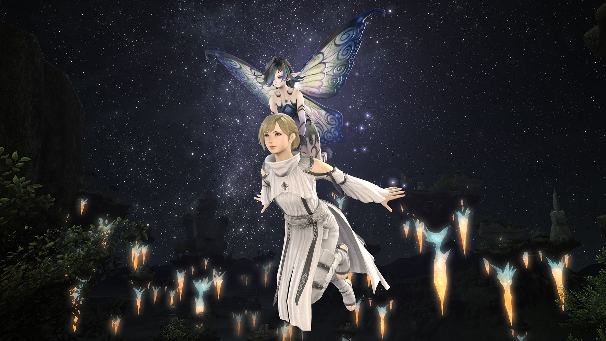

tags:
- FFXIV
- Guide
- Dungeon
- Aloalo
- Island
- Record
Level: "90"
Item Level: "605 (Sync: 665)"
Difficulty: Normal
Party Size: 1-4 (No job requirements)
Unsync: Not allowed
Time Limit: 90 Minutes
Entrance: Thavnair
Patch: "6.51"
icon: LiSwordsAloalo Island

In a seldom-traveled corner of the south sea isles lies Aloalo, an island filled with lush vegetation and teeming with vibrant wildlife. Yet the survival of this paradise hinges on a delicate natural balance which has only grown more precarious since the island's stewards departed a century ago. Answering the plea of a messenger most peculiar, you must join Matsya on a journey to restore order to Aloalo, and in the process uncover secrets long forgotten
- In-game description
General Info
Aloalo Island is a level 90 Variant Dungeon introduced in patch 6.51 with Endwalker.
| Name | Aloalo Island |
|---|---|
| Level | 90 |
| Item Level | 605 (Sync: 665) |
| Difficulty | Normal |
| Party Size | Flexible (1-4 man any role) |
| Unsyncing | Not Allowed |
| Time Limit | 90 Minutes |
| Duty Finder | V&C Dungeon Finder |
| Tomestones |  40 40  15 15 |
| Entrance | Thavnair (X:24.7 Y:37.0) |
| Patch | 6.51 |
To unlock this Variant Dungeon you must complete the associated quests starting on Stranger from Paradise
Conservation Records
Each conservation record is gained by completing one of the twelve endings.
These are split by three paths that you must choose at the start.
Left Path
Record 1: A Not-quite Deserted Island
- When prompted by Matsya about fishing (he’ll have an exclamation point above his head), tell him: “We should press on.”
- Ignore Zeal-blind Zozone, letting his HP deplete. He’ll call you a bastard and run off when his health bar empties.
───── ⋆⋅☆⋅⋆ ─────
Record 2: The First Settlers of Aloalo Island
- When prompted by Matsya about fishing (he’ll have an exclamation point above his head), tell him: “We should press on.”
- Help Zeal-blind Zozone.
───── ⋆⋅☆⋅⋆ ─────
Record 3: God of Heaven and Sea
- When prompted by Mastya about fishing (he’ll have an exclamation point above his head), tell him: “Fish to your heart’s content.”
- Interact with the patch of sand on the right and give the bait to Matsya.
───── ⋆⋅☆⋅⋆ ─────
Record 4: A Noxious Gift
- When prompted by Mastya about fishing (he’ll have an exclamation point above his head), tell him: “Fish to your heart’s content.”
- Interact with the mound of rocks on the left and give the bait to Matsya.
───── ⋆⋅☆⋅⋆ ─────
Middle Path
Record 5: The Roots of Arcanima
- After the midboss, kill the crawlers and treant in any order as long as they’re not standing on the sigil on the floor.
- Kill the next sets of monsters normally and proceed to the boss.
───── ⋆⋅☆⋅⋆ ─────
Record 6: Under the Boughts of the Great Tree
- After the midboss, kill the crawlers and treant in any order as long as they’re not standing on the sigil on the floor.
- On the next set of monsters, run through the red flower bushes and follow the path to scare off the armadillo-like rodents.
- On the next set of monsters (again), do the same thing as above — run through the red flowers to find the armadillo-like rodents and scare them off.
───── ⋆⋅☆⋅⋆ ─────
Record 7: A Dear Friend
- After the midboss, pull the crawlers and treant to be on top of the sigil on the floor. While staying on the sigil, kill the treant first, and then kill the crawlers.
- Head up the new path and kill the set of monsters.
- On the next and final set of monsters, fight the monsters, but do not hit Jolly-tailed J’jhimei.
───── ⋆⋅☆⋅⋆ ─────
Record 8: Fish for the Mind
- After the midboss, pull the crawlers and treant to be on top of the sigil on the floor. While staying on the sigil, kill the treant first, and then kill the crawlers.
- Head up the new path and kill the set of monsters.
- On the next and final set of monsters, attack Jolly-tailed J’jhimei.
───── ⋆⋅☆⋅⋆ ─────
Right Path
Record 9: A Familiar History
- When you approach Statice the pixie, select: "Well go on, don't keep them to yourself."
───── ⋆⋅☆⋅⋆ ─────
Record 10: The Remnants of Faith
- When you approach Statice the pixie, select: “I’m not interested in your ‘secrets.”
- When prompted again, select: “I don’t know if I can...”
- When prompted for the third time, select: “You just have a...wicked air about you.”
- Don’t interact with any of the treasures you see after taking the new path.
- Pull the lever to take the path down.
───── ⋆⋅☆⋅⋆ ─────
Record 11: A Lalafell or fish?
- When you approach Statice the pixie, select: “I’m not interested in your ‘secrets.”
- When prompted again, select: “I don’t know if I can...”
- When prompted for the third time, select: “You just have a...wicked air about you.
- Interact with the treasure to reveal the mimics and kill them.
- Pull the lever to take the path down.
───── ⋆⋅☆⋅⋆ ─────
Record 12: Wellspring of Golden Memories
- When you approach Statice the pixie, select: “I’m not interested in your ‘secrets.”
- When prompted again, select: “I don’t know if I can...”
- When prompted for the third time, select: “You just have a...wicked air about you.”
- Don’t interact with any of the treasures you see after taking the new path.
- Do not pull the lever in the room with the statues.
- In the statue room, complete the rituals for each statue.
- Continue the steps bellow after the rituals.
───── ⋆⋅☆⋅⋆ ─────
Ritual Instructions
You may copy the messages marked as Say and paste them as normal chat in-game.
Whale
O messenger from beyond the horizon, hear me.
Two clockwise laps around all the statues.
Then one counterclockwise lap.
In front of Whale do /dance emote.
Turtle
O wayfarer of land and sea, hear me.
Two counterclockwise laps around all the statues.
In front of Turtle do /bow emote.
Sparrow
O dancer of the skies, hear me.
In front of Sparrow do /blowkiss emote.
One clockwise lap around all the statues.
In front of Sparrow do /dance emote.
───── ⋆⋅☆⋅⋆ ─────
Continue your path
- After doing all three rituals, a new path will open up. Head down.
- Take out the monsters and Wobble-kneed Whasbyrm.
- Interact with the sack that he drops.
- Place the statues obtained from the sack on the pedestals.
- Sparrow on the first pedestal.
- Whale on the second pedestal.
- Turtle on the third pedestal.
───── ⋆⋅☆⋅⋆ ─────
Rewards
Personal Loot
Quaqua
| Item | Quantity |
|---|---|
| Aloalo Potsherd | 1 |
Ketuduke
| Item | Quantity |
|---|---|
| Aloalo Potsherd | 2 |
| Ketuduke Card | 1 |
Lala
| Item | Quantity |
|---|---|
| Aloalo Potsherd | 2 |
| Lala Card | 1 |
Statice
| Item | Quantity |
|---|---|
| Aloalo Potsherd | 2 |
| Statice Card | 1 |
Loquloqui
| Item | Quantity |
|---|---|
| Aloalo Potsherd | 2 |
| Loquloqui Card | 1 |
Treasure Coffers
Mount
Completing all the paths unlocks the Spectral Statice Whistle.

Aloalo Potsherd Rewards
| Name | Type | Cost |
|---|---|---|
| Free Spirit's Hat | Glamour | 15 |
| Free Spirit's Jacket | Glamour | 27 |
| Free Spirit's Ringbands | Glamour | 9 |
| Free Spirit's Cropped Slops | Glamour | 12 |
| Free Spirit's Backless Loafers | Glamour | 9 |
| O Speaker, Slumber Orchestrion Roll | Orchestrion Roll | 9 |
| Ballroom Etiquette - Humble Triumph | Emote | 9 |
| Modern Aesthetics - The Bold and the Braid | Hairstyle | 6 |
| Statice's Wings | Fashion Accessory | 3 |
Achievements
| Name | Points | Task |
|---|---|---|
| Lord of the Skies | 5 | Defeat Ketuduke in the Aloalo Island variant dungeon. |
| Number Cruncher | 5 | Defeat the lala in the Aloalo Island variant dungeon. |
| A Prank Too Far | 5 | Defeat Statice in the Aloalo Island variant dungeon. |
| The Frailty of Words | 5 | Defeat the Loquloqui in the Aloalo Island variant dungeon. |
| Good-willed Hunting | 10 | Unlock all conservation records on Aloalo Island. |
| Mapping the Realm: Aloalo Island | 10 | Discover every location within the Aloalo Island variant dungeon. |
───── ⋆⋅☆⋅⋆ ─────
Date: 28/04/2024
Collected by: W'eylyn Mavourneen